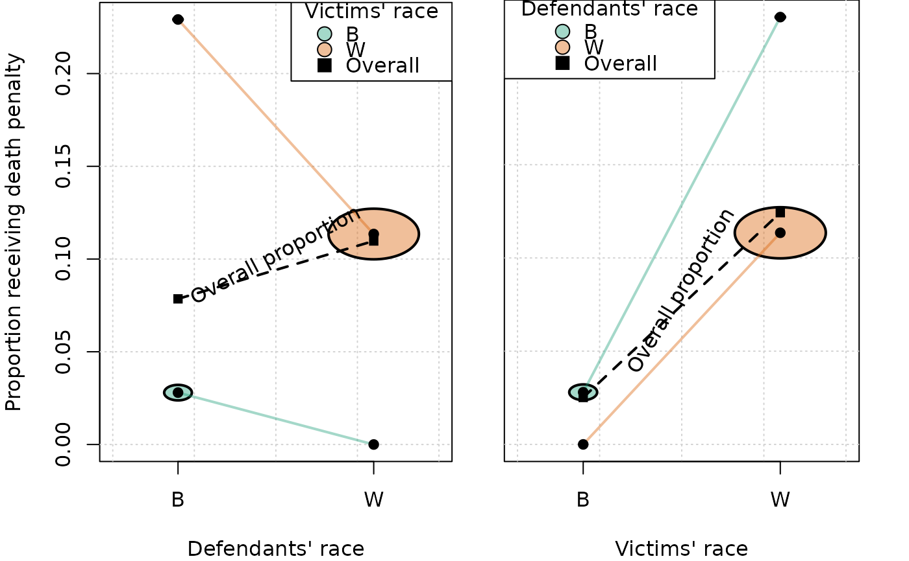

Construct a Paik-Agresti diagram adapted and enhanced from the
asbio::paik function.
Construct a Paik-Agresti diagram adapted and enhanced from the
asbio::paik function.
Usage
paik(
formula,
data,
counts,
resp.lvl = 2,
circle.mult = 1,
xlab = NULL,
ylab = NULL,
leg.title = NULL,
leg.loc = NULL,
show.mname = TRUE,
col = c("#1B9E77", "#D95F02", "#7570B3", "#E7298A", "#66A61E", "#E6AB02", "#A6761D",
"#666666"),
alpha = "66",
marginal = TRUE,
cex = 1,
cex.cond = cex,
cex.marg = cex,
pch.cond = 19,
pch.marg = 15,
lwd = 2,
lwd.marg = lwd,
lwd.cond = lwd,
lwd.circle = lwd,
raise.prop = 0.03,
...
)
paik(
formula,
data,
counts,
resp.lvl = 2,
circle.mult = 1,
xlab = NULL,
ylab = NULL,
leg.title = NULL,
leg.loc = NULL,
show.mname = TRUE,
col = c("#1B9E77", "#D95F02", "#7570B3", "#E7298A", "#66A61E", "#E6AB02", "#A6761D",
"#666666"),
alpha = "66",
marginal = TRUE,
cex = 1,
cex.cond = cex,
cex.marg = cex,
pch.cond = 19,
pch.marg = 15,
lwd = 2,
lwd.marg = lwd,
lwd.cond = lwd,
lwd.circle = lwd,
raise.prop = 0.03,
...
)Arguments
- formula
A two sided formula, e.g.
Y ~ X1 + X2, withX1andX2treated as categorical variables. The levels of the first explanatory variable,X1are displayed along the x-axis and the second explanatory variable,X2, is used as the conditioning variable whose levels are distinguished in the graph with different colors. Interactions and nested terms are not allowed in the formula although the display presumes different effects ofX1within each level ofX2.Ycan be a categorical variable with two levels or a numerical variable. The mean value ofY, or the proportion in the second level ifYis categorical, is displayed on the vertical axis.- data
data.frame containing variables in formula. If rows of the the data frame should represent more than one observation, a variable named 'Freq' must record the frequency of each row, or the frequencies must be given through the 'counts' parameter below.
- counts
A vector of counts for the associated categorical variables in formula. The variable 'Freq' is used if it exists in the data frame,
data- resp.lvl
The level in Y of primary interest. See example below.
- circle.mult
Multiplier for circle radii in the diagram.
- xlab
X-axis label. By default this is defined as the categories in the first explanatory variable, X1.
- ylab
Y-axis label. By default these will be proportions with respect to the specified level of interest in the response.
- leg.title
Legend title. By default the conditioning variable name.
- leg.loc
Legend location. A legend location keyword; "bottomright", "bottom", "bottomleft", "left", "topleft", "top", "topright", "right" or "center".
- show.mname
Logical, indicating whether or not the words "Overall proportion" should be printed in the graph above the dotted line indicating marginal proportions.
- col
list of colors for conditional levels. Default: the 8 colours of the 'Dark2' palette of RColorBrewer.
- alpha
transparency for circles expressed in hexadecimal, e.g. 'AA' or 'FF' for no transparency. Default: '66'
- marginal
logical, show marginal relationship, default: TRUE
- cex,
cex.cond, cex.marg cex for points, default: 1, default for cex.cond and cex.marg is cex
- pch.cond
pch for conditional points, default 19
- pch.marg
pch for marginal points, default 15
- lwd
lwd for line segments, default: 2
- lwd.marg
lwd for marginal (overall) line segments. Default: lwd
- lwd.cond
lwd for conditional line segments. Default: lwd
- raise.prop
proportion of vertical height of plot by which to raise the "Overall Proportion" label. Default: 0.03
- ...
Additional arguments from plot. Especially useful to provide
ylimif needed.
References
Agresti, A. (2012) Categorical Data Analysis, 3rd edition. New York. Wiley. Paik M. (1985) A graphical representation of a three-way contingency table: Simpson's paradox and correlation. American Statistician 39:53-54.
Agresti, A. (2012) Categorical Data Analysis, 3rd edition. New York. Wiley. Paik M. (1985) A graphical representation of a three-way contingency table: Simpson's paradox and correlation. American Statistician 39:53-54.
Examples
data(death.penalty) # from Agresti 2012
print(death.penalty)
#> count verdict d.race v.race
#> 1 53 Y W W
#> 2 11 Y B W
#> 3 0 Y W B
#> 4 4 Y B B
#> 5 414 N W W
#> 6 37 N B W
#> 7 16 N W B
#> 8 139 N B B
op <- par(mfrow=c(1,2), mar=c(4,4,0.1,0.1))
paik(verdict ~ d.race + v.race,
counts = death.penalty$count,
data = death.penalty,
leg.title = "Victims' race", xlab = "Defendants' race",
ylab = "Proportion receiving death penalty")
par(mar=c(4,2,0,2))
paik(verdict ~ v.race + d.race, counts = death.penalty$count, data = death.penalty,
xlab = "Victims' race", leg.title = "Defendants' race",leg.loc="topleft",
ylab = "", yaxt = "n")
paik(am ~ gear + carb, mtcars)
#> Error in matrix(nrow = length(cl), ncol = length(ol), dimnames = list(paste(cond.var, cl, sep = "."), paste(ov, ol, sep = "."))): length of 'dimnames' [1] not equal to array extent
par(op)
data(death.penalty) # from Agresti 2012
print(death.penalty)
#> count verdict d.race v.race
#> 1 53 Y W W
#> 2 11 Y B W
#> 3 0 Y W B
#> 4 4 Y B B
#> 5 414 N W W
#> 6 37 N B W
#> 7 16 N W B
#> 8 139 N B B
op <- par(mfrow=c(1,2), mar=c(4,4,0.1,0.1))
paik(verdict ~ d.race + v.race,
counts = death.penalty$count,
data = death.penalty,
leg.title = "Victims' race", xlab = "Defendants' race",
ylab = "Proportion receiving death penalty")
par(mar=c(4,2,0,2))
paik(verdict ~ v.race + d.race, counts = death.penalty$count, data = death.penalty,
xlab = "Victims' race", leg.title = "Defendants' race",leg.loc="topleft",
ylab = "", yaxt = "n")

paik(am ~ gear + carb, mtcars)
#> Error in matrix(nrow = length(cl), ncol = length(ol), dimnames = list(paste(cond.var, cl, sep = "."), paste(ov, ol, sep = "."))): length of 'dimnames' [1] not equal to array extent
par(op)